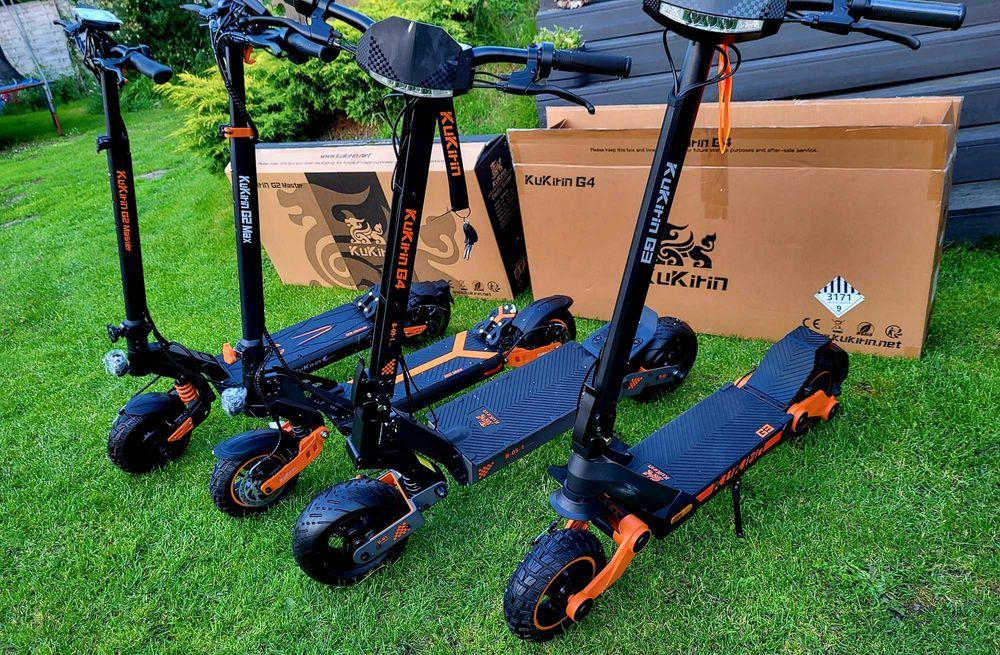
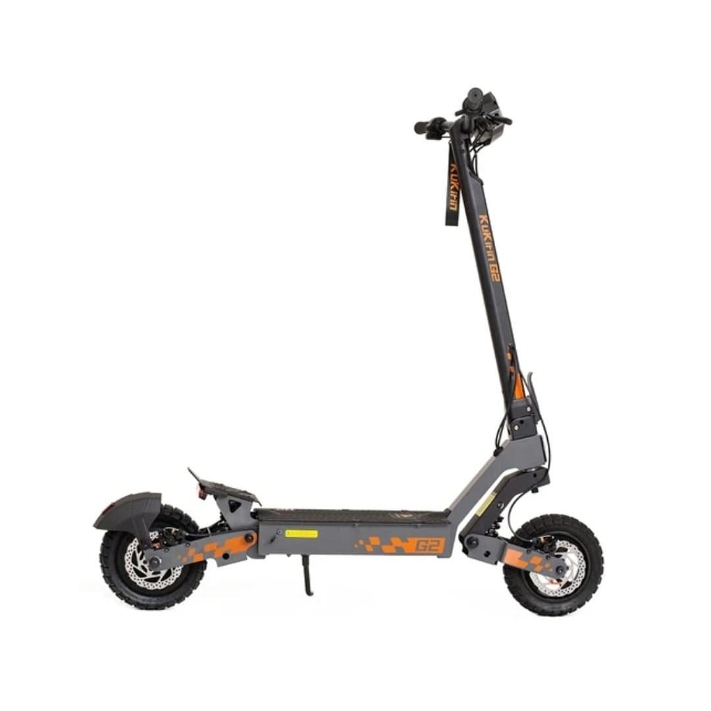

KuKirin – Az elektromos rollerek világa
A KuKirin egy olyan márka, amely az elektromos rollerek világában egyre nagyobb népszerűségnek örvend. A gyártó elsősorban modern megjelenésű, erőteljes és praktikus elektromos rollereket kínál. Modelljei között megtalálhatók a hétköznapi városi közlekedésre tervezett változatok, valamint a nagyobb teljesítményű, hosszabb utakra szánt típusok is. A márka célja, hogy különböző igényekhez megfelelő elektromos rollereket kínáljon, amelyek ötvözik a modern technológiát, a kényelmet és a látványos kialakítást.

A KuKirin története és fejlődése
A KuKirin az elektromos mobilitás piacának egyik ismert szereplője. Az évek során egyre több különböző modellel jelent meg, amelyek eltérő teljesítményt, hatótávot és felszereltséget kínálnak. A márka rollerei elsősorban a jellegzetes megjelenésükről, masszív kialakításukról és változatos modellkínálatukról ismerhetők fel. A folyamatos fejlesztéseknek köszönhetően az újabb típusok már modernebb kijelzőkkel, fejlettebb akkumulátorokkal és különböző kényelmi megoldásokkal rendelkeznek.

A KuKirin rollerek különlegességei
A KuKirin elektromos rollerek egyik legfontosabb jellemzője a változatos kialakítás. A kisebb modellek könnyebben kezelhetők, míg a nagyobb típusok robusztusabb vázzal, erősebb motorral és nagyobb akkumulátorral rendelkezhetnek. Sok modell első és hátsó rugózással, tárcsafékkel és nagy méretű kerekekkel készül. A modernebb változatokon digitális kijelző is található, amelyen a vezető többek között a sebességet és az akkumulátor töltöttségét követheti. Ezek a tulajdonságok teszik érdekessé a márkát az elektromos rollerek kedvelői számára.

Népszerű KuKirin modellek
A KuKirin kínálatában több különböző modell található, amelyek más-más felhasználási célra készültek. A G2 egy népszerű, középkategóriás modell, amely a kényelmes kialakításával és rugózásával tűnik ki. A G3 nagyobb méretű és erősebb felépítésű roller, míg a G4 már egy komolyabb teljesítményű kategóriát képvisel. A G4 Max pedig a márka nagyobb és erősebb modelljei közé tartozik, amelyet elsősorban azok keresnek, akik magasabb felszereltséget és nagyobb teljesítményt szeretnének. A különböző modellek között mindenki megtalálhatja az igényeinek megfelelő típust.

KuKirin G2 – A népszerű középkategóriás modell
A KuKirin G2 a márka egyik legismertebb modellje. Modern, sportos megjelenésű kialakítással rendelkezik, amelyhez kényelmes rugózás és digitális kijelző társul. A roller olyan felhasználóknak készült, akik egy erősebb, masszívabb elektromos rollert keresnek a mindennapi közlekedéshez. Kialakítása stabil haladást biztosíthat, a megfelelő karbantartás pedig hozzájárulhat a hosszabb élettartamhoz. A G2 különösen azok számára lehet érdekes, akik a városi modelleknél komolyabb felszereltséget szeretnének.
Miért választják a KuKirint?
A KuKirin népszerűségének egyik oka, hogy többféle árkategóriában és teljesítményszinten kínál elektromos rollereket. A sportos megjelenés, a masszív kialakítás és a különböző technikai megoldások sok vásárló figyelmét felkeltik. A márka modelljei között találhatók egyszerűbb és komolyabb felszereltségű változatok is. Vásárlás előtt azonban érdemes összehasonlítani a hatótávot, a motor teljesítményét, a fékrendszert és a roller tömegét, hiszen ezek jelentősen befolyásolják a használati élményt.
A KuKirin jövője
Az elektromos mobilitás folyamatos fejlődésével a KuKirin előtt is számos lehetőség áll. Az akkumulátortechnológia, a motorok és az elektronikai rendszerek fejlődése újabb és modernebb modellek megjelenését teheti lehetővé. A vásárlók egyre inkább keresik azokat a rollereket, amelyek nemcsak látványosak, hanem megbízhatóak, kényelmesek és megfelelő biztonsági felszereltséggel rendelkeznek. A KuKirin célja, hogy továbbra is jelen legyen ezen a folyamatosan fejlődő piacon.